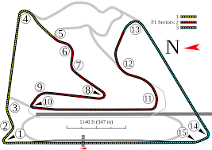

Menú de Juegos
Bandera de la Meta con Canvas
Circuito Más Cercano
Tu ubicación es: Latitud: 43.3680851, Longitud: -5.8675408. El circuito más cercano es Circuito de Jarama, a 381.27 km.
Circuitos Y Distancias
Pulse sobre las imagenes para escuchar el rugir de los coches
| Nombre del Circuito | Coordenadas | Distancia | Foto |
|---|---|---|---|
| Circuito Internacional de Baréin | Lat: 25.958, Lng: 50.51 | 5394.06 km |  |
| Circuito Yas Marina | Lat: 24.467, Lng: 54.603 | 5823.57 km | |
| Circuito de Albert Park | Lat: -37.849, Lng: 144.968 | 17491.85 km | |
| Circuito de Mónaco | Lat: 43.734, Lng: 7.42 | 1070.46 km | |
| Circuito de Spa-Francorchamps | Lat: 50.437, Lng: 5.971 | 1191.93 km |  |
| Autodromo Nazionale Monza | Lat: 45.62, Lng: 9.281 | 1225.38 km | |
| Circuito de Silverstone | Lat: 52.073, Lng: 1.014 | 1095.16 km | |
| Circuito de Hockenheimring | Lat: 48.563, Lng: 7.642 | 1190.88 km | |
| Circuito de Suzuka | Lat: 35.511, Lng: 139.618 | 10573.54 km | |
| Circuito de Jarama | Lat: 40.569, Lng: -3.203 | 381.27 km |